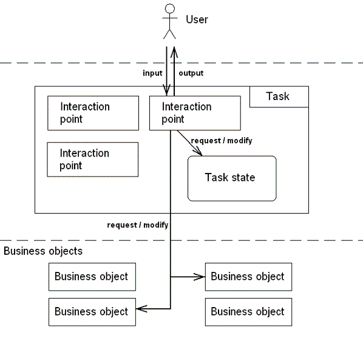
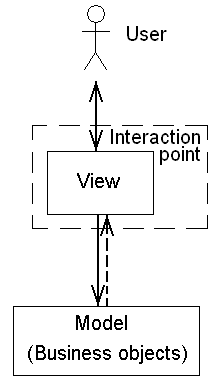
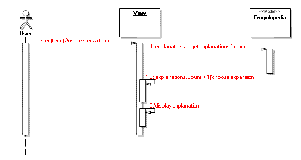
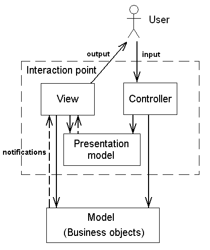
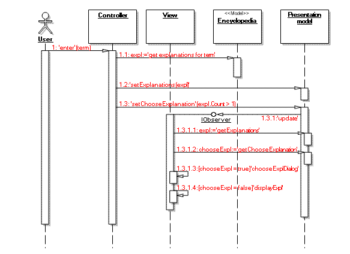
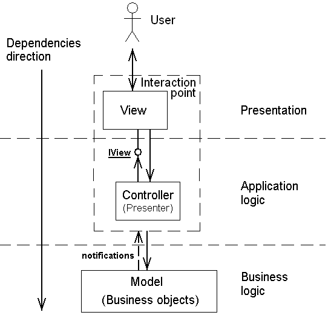
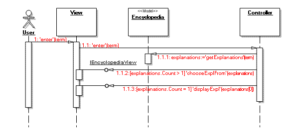

Part 1. The basics of MVC and MVP
Introduction
Basic concepts
Interaction point as a single view
Model-View-Controller
Model-View-Presenter
Summary
Introduction
Clear separation of responsibilities along with a low coupling level is a sign of
a well-designed application. Whereas design patterns are proven solutions to reduce
coupling between small sets of objects, architectural patterns help to improve a
system’s design on the whole. One popular architectural pattern is Model-View-Controller.
Originally came from Smalltalk now it has implementations in various languages.
In Java for example such frameworks as Spring and Struts have gained high popularity
and are widely used. However in .NET world the existing implementations aren’t much
spread, being mainly inspired by Java implementations they fit well only for Web
applications and are not suitable for Windows thick client applications.
Another architectural pattern that in fact is an evolution of MVC is Model-View-Presenter.
The underlying ideas of MVP are very similar to those in MVC however MVP is designed
to be more usable and understandable. MVP has much less implementations then MVC
does, one known MVP implementation for .NET is the Microsoft User Interface
Process application block (UIPAB). In spite of numerous problems, and hence low
usability of UIPAB, its reasonable key concepts inspired us to create something
new.
This article starts a series covering the development of a native Model-View-Presenter
framework for .NET platform. Although it will be an MVP framework we will still
use the term "Controller" as it seems to be be more pertinent than the "Presenter"
notation (UIPAB follows the same manner describing itself as MVC, though in fact it
is closer to MVP). Let us start with clarifying the basic concepts of an application’s
structure. After that we will proceed to the discussion of the existing architectural
solutions (including MVC and MVP).
Basic concepts
Every application can be split into a number of tasks. Here by task we mean a sequence
of actions which accomplish a job, problem or assignment. There are different ways
of breaking an application into tasks for example tasks may be associated with use
cases. Each task involves interaction with a user done via so called interaction
points. An interaction point is represented by one or more classes which serve the
following needs:
- receive and process an input from a user
- make proper requests to the business objects
- request/modify the task’s state
- send feedback to the user
The following figure illustrates the described relationships.

As we can see the interaction point responsibilities are rather vast. That is why
architectural solutions such as MVC make their aim to split interaction points into
simpler parts. Next we will consider various ways of splitting the interaction point
(including the MVC paradigm). Though the division of the interaction point into
smaller elements is preferred we will start with a case when an interaction point
is represented by a single view class.
Interaction point as a single view
When the interaction point is made of a single view class it is the view which is
responsible for all intermediate data processing. Such view class handles user input,
makes proper calls to the business objects, analyses the data received from them,
decides what to display to the user and actually displays it.

In order to demonstrate this and the other approaches let us now introduce the example
we will refer to throughout the article. Consider the encyclopedia application where
a user enters some term and the system gives back the explanation for it. In most
cases the explanation is unambiguously found for a term. However sometimes several
explanations of a term (especially if the term is an abbreviation) may apply and
the system then asks the user which one to display.
With a single view approach the sequence diagram for our encyclopedia application
would look as follows:

This figure reveals the drawbacks of combining all intermediate logic into a view
class. The view then becomes too bloated and difficult for understanding. Moreover
such approach violates the single responsibility principle by uniting in the view
two conceptually different responsibilities. First is making requests to the model
and deciding what to display (application logic) and the second is actually displaying
(presentation mechanism). As a result if we want to make our encyclopedia work both
as a windows and a web application we will have to duplicate the application logic
in two view classes: one for Windows and the other for web environment.
Model-View-Controller
We have seen the downsides of the solution when the interaction point is represented
by a single view class. On the contrary to the single view technique MVC does break
the interaction point into three parts. These parts are: Controller, View and Presentation
model.

Controller handles user input, makes subsequent calls to the business objects and
manages the application flow. In particular the controller decides what to display
to the user. However it is not allowed in MVC to access the view directly, instead
the underlying model should be altered and the changes will be propagated to the
view through the observer mechanism. Thus in order to make the view update itself
the controller should change the presentation model object.
In our encyclopedia example the controller class asks the model for the proper explanations
(1.1 in the figure below) and passes the returned explanations to the presentation
model (1.2). Depending on how much explanations were found (one or more) the controller
sets a flag in the presentation model indicating whether the user should choose
the desired variant (1.3). The view then reflects the changes in the presentation
model (1.3.1) and either displays dialog with several variants (1.3.1.3) or displays
the only found explanation (1.3.1.4).

The main advantage of MVC is a clear distribution of responsibilities between parties.
The controller drives the application flow specifying what and when should be done.
The view only renders the underlying business and presentation models and presents
them to the user. Since views in MVC do not contain any application logic they can
be harmlessly substituted, for example there may be different view classes for Windows
and web interfaces.
Nevertheless there are two major drawbacks in the traditional MVC approach. First
is a higher complexity because of the observer mechanism: in order to update the
view the controller must make changes to the presentation model, which will trigger
the view update. Such indirect relationship may be difficult to understand. Instead
the controller could simply send a message to the view, however such direct linking
is not allowed in MVC.
The other shortcoming is that MVC does not conform to the modern UI programming
environments where widgets themselves handle user gestures. For example form classes
(either web or Windows) in .NET applications by default contain handlers for user
input. Thus it would be difficult to break the common paradigm and make controllers
receive the user input instead of views.
The next architectural pattern we consider was designed to eliminate the drawbacks
of MVC, while preserving its separation of application logic and presentation mechanism.
Model-View-Presenter
Model-View-Presenter approach appeared in the late 1990’s and was an evolution of
MVC pattern. Above we have described two typical shortcomings of the MVC pattern.
Now let us look at how MVP eliminates these two.
Firstly according to MVP direct requests from the controller to the view become
possible. Thus the controller itself may trigger the view updates instead of performing
a round trip through the presentation model. In this sense the controller in MVP
contains the presentation model from MVC. That is probably the reason why the controller
in MVP is referred to as presenter (however we will continue naming it controller).

Here we must note that although the controller has a link to the view object it
does not depend on the concrete view class. Instead the controller treats the view
in an abstracted way by the means of a separated interface implemented by the view
(see the figure above). For example the encyclopedia controller will communicate
the view via the IEncyclopediaView interface with “chooseExplFrom(…)” and “displayExpl(…)”
operations. Since such separated interface is a part of the application logic, the
dependency runs from the presentation to the application logic but not vice versa.
Next thing that makes MVP more convenient (in contrast to MVC) is that it allows
views to receive user input. Such behavior fits well modern UI environments. For
instance in Windows keyboard and mouse events are handled by UI controls and forms,
in ASP.NET user requests are processed by web page classes. Though the view in MVP
receives the user input it should merely delegate all the processing to the controller.
The next figure demonstrates the interactions in MVP by the example of the encyclopedia
application. As we can see direct calls from the controller to the view (via the
IEncyclopediaView interface) make the overall picture less complicated then that
in MVC. Yet the clear separation of responsibilities between the controller (application
logic) and the view (presentation mechanism) still remains, in particular allowing
the developer to easily support interchangeable views for web and Windows environments.

Summary
Let us sum up what we have discussed so far. Among the architectural patterns we
have considered MVP seems to be the most attractive one. It allows building flexible
systems without overheads peculiar to the classic MVC approach. That is why it is
MVP that we are going to base our framework on.
Proceed to Part 2: Implementing
core MVP functionality